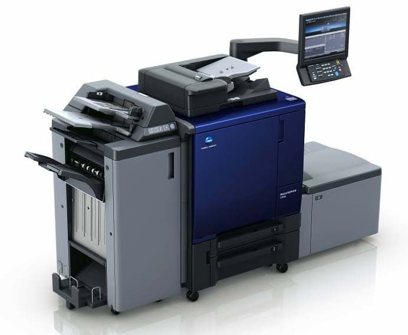
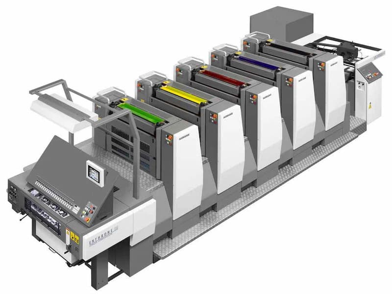
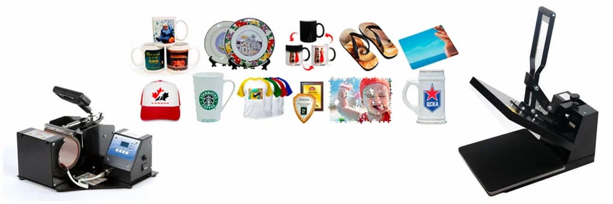

Введение
В современном мире полиграфии существует множество технологий печати, каждая из которых имеет свои особенности и преимущества. Правильный выбор метода печати напрямую влияет на качество конечного продукта и его стоимость. Давайте разберемся в основных технологиях и их применении.

Цифровая печать - один из самых востребованных методов на сегодняшний день. Основные преимущества:
Идеально подходит для:

Офсетная печать остается стандартом качества для больших тиражей. Особенности:
Подходит для:

Сублимационная печать позволяет переносить изображения на различные поверхности:
Используется для:
Заключение
Современные технологии печати предоставляют широкие возможности для реализации любых полиграфических проектов. Правильный выбор метода печати позволит получить качественный результат в оптимальные сроки и с оптимальным бюджетом.
Типография «Лазурь» использует передовые технологии печати, чтобы удовлетворить любые потребности наших клиентов. Наши специалисты помогут выбрать оптимальный метод печати для вашего проекта и обеспечат высокое качество исполнения.
Полезные советы
Свяжитесь с нами для консультации и получения индивидуального предложения по вашему проекту!